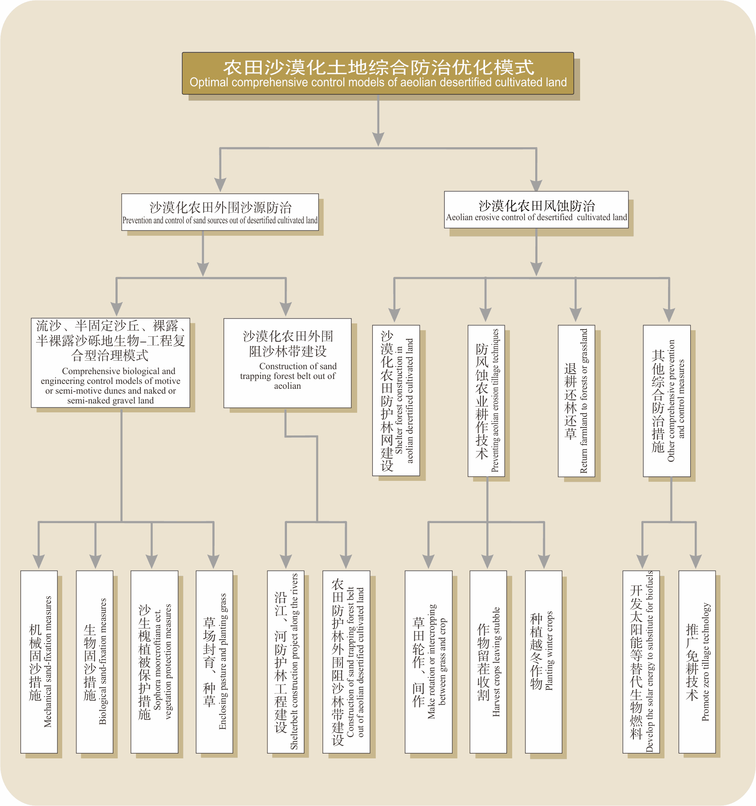
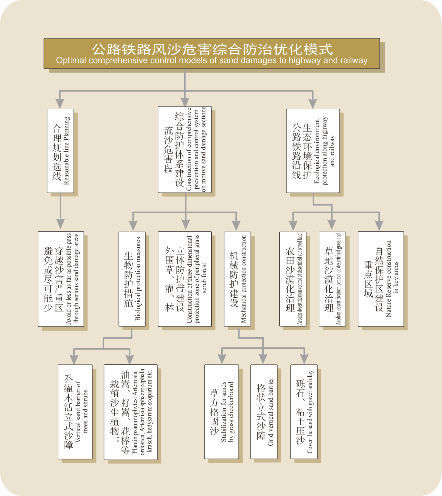
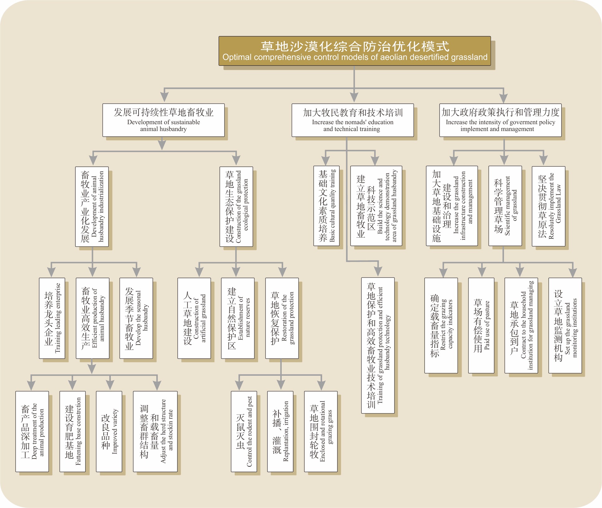
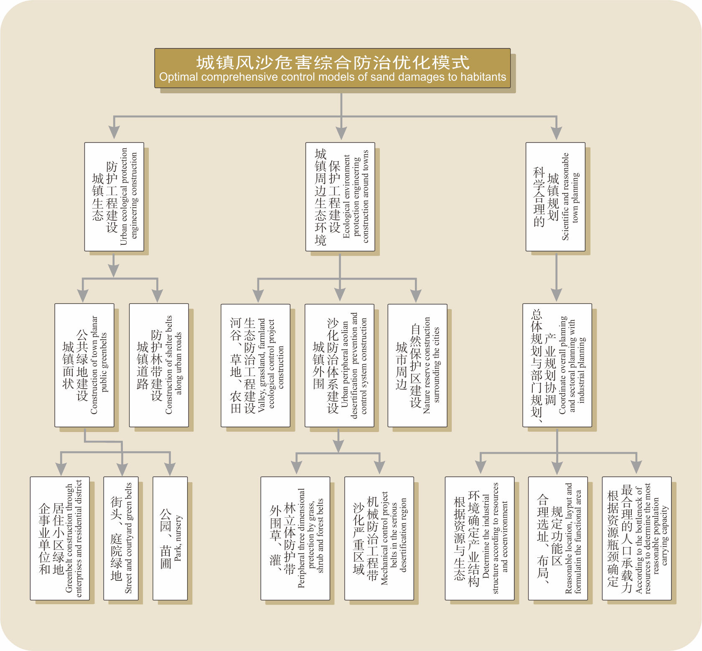

西藏耕地大部分分布在河谷地区，仅“一江两河”流域耕地面积191 010 hm2，占全区耕地面积的52.98％。河谷地区的耕地不同程度地遭受农田风蚀和沙埋等沙漠化的危害，造成土壤养分丧失，肥力下降，产量降低。
根据藏南高原河谷湖盆区土地沙漠化的成因、分布及危害等特点，沙漠化土地的治理采取重点治源、就地固定沙漠化土地与潜在沙漠化土地兼治、治理与开发并重的总体思路、配合农业结构调整、退耕还林、还草等措施，使沙漠化从整体上得到控制。该区域沙漠化的治理，要充分利用区域内丰富的光、热、水资源，综合运用各项农业新技术，发展高增值农产品，提高生产力水平和当地人民的生活水平。此外，大力开发太阳能资源、水力资源和风能资源，用可更新资源代替生物资源，从根本上解决人民生活能源问题，杜绝砍挖植被和焚烧桔秆，防止植被的破坏。在保护植被的前提下，有机肥还农田，提高土壤肥力及稳定性。同时，要加强退耕还林还草的力度和规模，保护和恢复河谷高山森林灌丛植被，减少土壤侵蚀。
合理规划公路和铁路，避免穿越风沙严重危害路段；穿越沙化严重的路段建立综合防护工程体系；沿线及周边严禁破坏植被、超载放牧和矿产开采。
西藏天然草地约占全国天然草地总面积的1/5。造成草地退化、沙化的主要人为原因是超载过牧、草地管理不力、培育改良落后。另外还存在资金投入不够、人才缺乏、科技水平落后、能源短缺、交通信息闭塞等限制因素。因此，在制定沙化草地防治对策与技术时，应以社会-经济-自然复合系统理论和草地生态系统理论为依据,充分发挥政府部门的政策、资金优惠条件，以草地生态环境的良性循环为宗旨，以改善农牧民的生活条件为目标，开展草地生态保护建设，发展产业化生态畜牧业，实现草地-牲畜-牧民的高度和谐。
城镇风沙危害防治要制订科学合理的防治规划和生态环境保护规划，将其与城镇总体规划衔接和协调。确定城镇及其外围合理的环境承载力和草地载畜量，根据区域支柱产业和社会经济发展模式，调整农业结构，开展退耕还林还草、荒山荒坡造林、轮牧休牧还草等工作。同时，要根据城镇风沙危害状况和成因，建立城镇综合生态防护工程体系，布局城镇外围风沙防治体系，开展城镇防护工程建设和道路防护林带建设。
